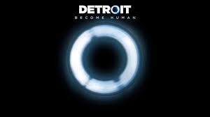
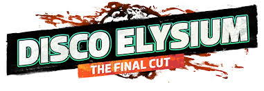

Yakın gelecekte, duyguları olan robotların (androidlerin) dünyasında geçen interaktif bir film tadında. Üç farklı karakterin hikayesini yönetiyorsun ve verdiğin her küçük karar hikayenin sonunu tamamen değiştirebiliyor.

Eğer "okumayı severim, derin diyaloglar ve felsefi alt metinler bana göre" diyorsan, bu oyun bir şaheser. Hafızasını kaybetmiş bir dedektifi canlandırırken, kendi iç seslerinle (beynindeki bölümlerle) tartışarak bir cinayeti çözmeye çalışıyorsun.
Eskiden sadece öfke kusan Kratos'un, bu seride bir baba olarak gelişimini izliyoruz. İskandinav mitolojisinin kalbinde, oğlu Atreus ile çıktığı bu yolculuk hem aksiyon hem de duygusal açıdan çok tatmin edici.